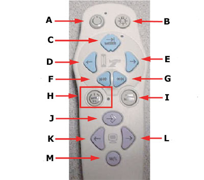
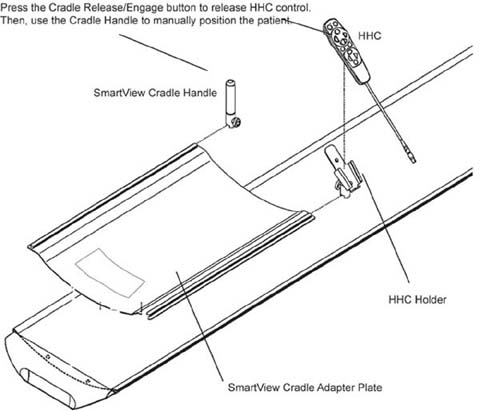

Operating Documentation
Direction 5193574-800, Rev# 22
LightSpeed 7.X Service Methods
Module Version 2.0, Version Date 8/25/14
Operating Documentation |
The SmartStep hardware is shipped ready for immediate installation. The following installation procedure describes how to install the hardware on the gantry through general layout of cabling and connections. Refer to the SmartStep Owners Manual for operation.
Prerequisites
Must have all components in B7877ZS Smart Step Collector - including software and hardware.
Must have hardware kit.
| ||||
| Risk of electric shock or death | ||||
| use proper lock out-Tag out (loto) procedure | ||||
| do not perform option installation until loto has been performed. |
Cover Removal
Remove the gantry side covers. Refer to the System Service Methods for procedure on gantry cover removal.
Turn [OFF] gantry service switches, Axial Drive, HVDC, and 120 VAC.
Remove both left and right side gantry base side covers, and then remove the gantry base rear covers. Refer to the System Service Methods for procedures on gantry cover removal.
| ||||
| DO NOT remove the gantry base FRONT cover. | ||||
For CT systems equipped with Inter Process Communication Panel (IPC) see:
For PET systems equipped with Inter Process Communication Panel (IPC) see:
For CT and PET systems equipped with Gating Options Board (GOB) see:
For CT and PET systems using a 16 or 8 or 4 Slice Gantry see:
Interconnects for SmartStep on CT and PET systems with 16/8/4 Slice Gantry
During needle biopsies, the Radiologist or Physician controls radiation with the foot switch, and uses the hand-held controller (HHC) to view images on the in-room monitor. The HHC also provides alignment light, move-to-scan, and cradle micro positioning controls. The Radiologist or Physician also has the option to release the HHC control of the cradle, and use the cradle handle to manually position the patient in the scan field of view.
Table 1: Hand Held Controller push button functions
 | A PREP Prepares the system for x-ray acquisitions. |
| B ALIGNMENT LIGHT This button enables the laser positioning lights. | |
| C Move to Start Location This button positions the cradle to the start lovation prescribed by you in the SmartStep View/Edit screen. | |
| D Cradle Move IN Moves the cradle toward the gantry. | |
| E Cradle Move OUT Moves the cradle away from the gantry. | |
| F Bump In This moves the cradle a pre-defined bump distance towards the gantry. The bump distance is pre-defined on the View/Edit screen. | |
| G Bump Out This moves the cradle a pre-defined bump distance away from the gantry. The bump distance is pre-defined on the View/Edit screen. | |
| H Disabled This button is disabled. It is not used in SmartStep. | |
| I Cradle Release This is a toggle button. It releases the cradle so it can be moved using the cradle handle. Pressing the button again latches the cradle. | |
| J Change Focus | |
| K Prior Image | |
| L Next Image | |
| M W/L Toggle |
Illustration 1: SmartStep Cradle Handle and Holder Install

Remove the patient pad from the cradle and set aside.
Remove and discard the four plastic covers shipped on the cradle adaptor plate.
Remove and discard the front four plastic caps that cover the cradle screws.
Orient the cradle handle adaptor plate, and lay it on the cradle top so the four “feet” on the bottom of the adaptor plate rest into the front four cradle screw holes. This prevents slippage during the manual positioning.
Return the patient pad to the cradle.
Slide the HHC holder and cradle handle onto the cradle adpater plate. Orient them such that the knurled knobs face away from the cradle.
Secure the holder and handle into place by tightening the knurled knobs.
| NOTE: | The cradle handle may have some small lateral movement. This is normal. |
Clear all obstructions to gantry motion and turn [ON] all three switches Axial Drive, HVDC, and 120 VAC on the service switch panel.
Complete System Scanning Test. Refer to the system’s Service Methods for this procedure.
Check SmartStep Operation. Refer to SmartStep Operator’s Manual.
Perform Patient Touch Test.
Before re-installing the base covers of the gantry turn [OFF] all three switches Axial Drive, HVDC, and 120 VAC on the service switch panel.
Re-install side gantry covers. Refer to the system’s Service Methods for procedures.